Izzie Heath Me
- Created the color palette and brand
- Made a high-fidelity Figma mockup
- Implemented the Figma mockup in code
- Ran user testing and iterated on the UX based on what we learned
A mobile app where friends share a song a day and sync up through music.
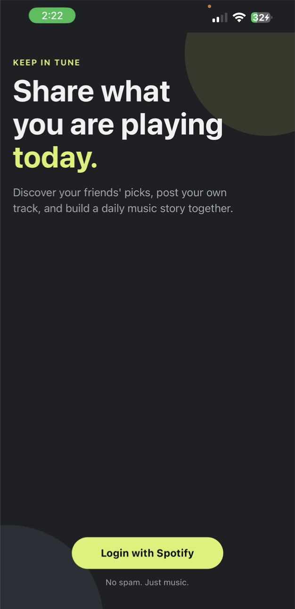
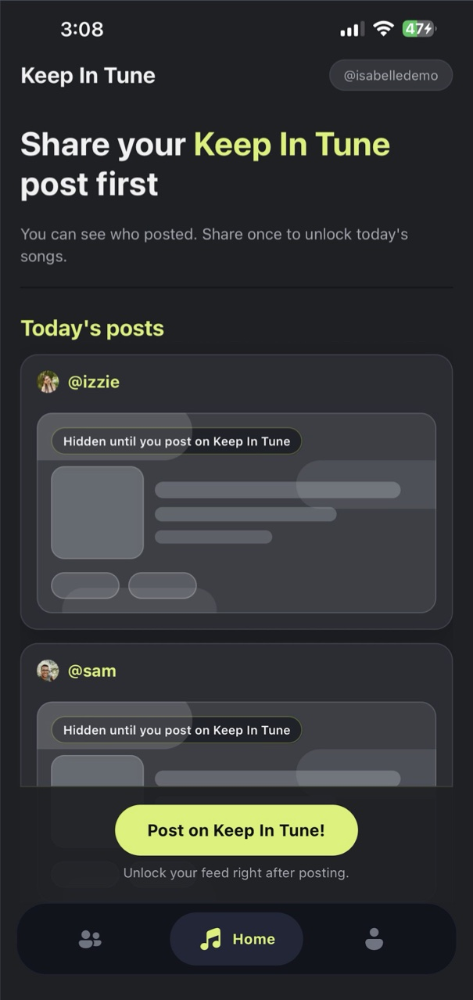
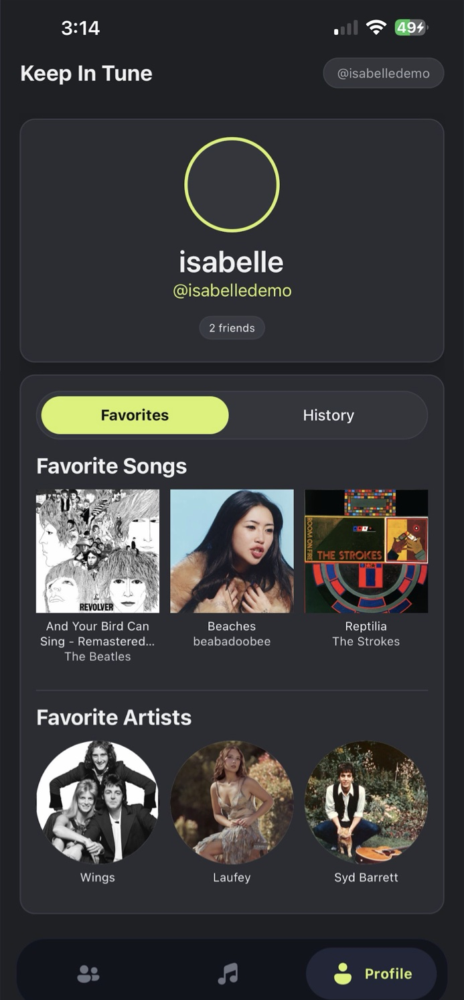
To foster deeper connections between friends through a daily sharing of music.
To synchronize and connect friendships through the universal language of music.
Our first statement described what the app does. The rewrite is about why it exists. “Synchronize” links straight to the name, Keep In Tune, and moves the idea from simple sharing toward coming together. “Universal language” raises the purpose: using music to build deeper connections, not just to post things.
Daily sharing is still the core feature. The new wording gave the team, future investors, and above all users a clearer reason for it.
Notes on the prototype call out where in-class feedback and user tests changed the design.
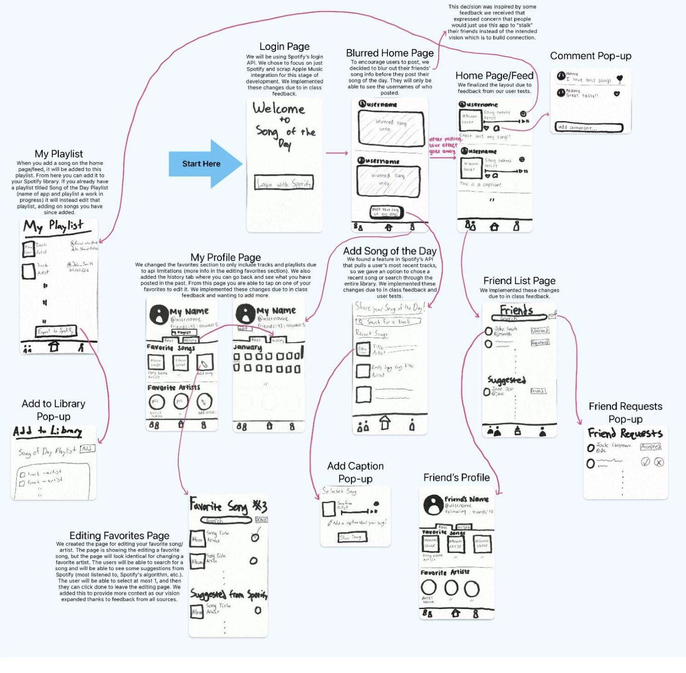
People might use it to “stalk” friends instead of connecting.
So friends’ songs stay blurred until you post your own. You can see who posted, and the full feed unlocks once you share. It keeps the focus on connection, which is the point of the app.
Focus on one music service: Spotify.
Based on in-class feedback, we scrapped Apple Music for this stage of development. We polled peers on social media and Spotify came back as the most used, which suits a target audience in their 20s.
Reshape favorites and add a way to look back.
Spotify’s API limited what favorites could include, so we reshaped them. After in-class feedback we also added a History tab where you can see everything you’ve posted. The feed layout was finalized after user tests.
Four flows: onboarding, home and posting, friends, and user profile, including a playlist feature we later cut.
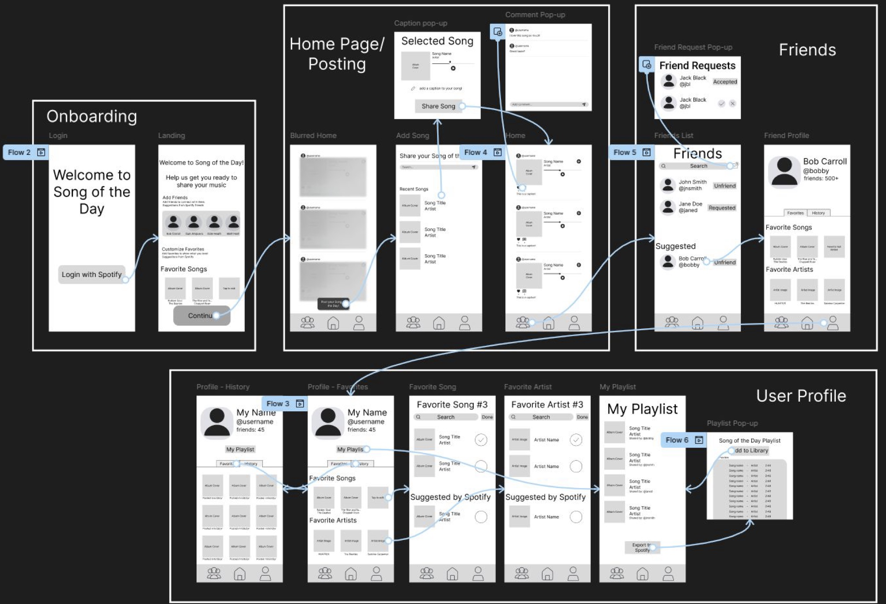
I created the palette and brand, then built the high-fidelity mockup in Figma and implemented it in React Native. Dark surfaces carry a single lime accent for primary actions and active states.
Lime#D7F269
Primary buttons, active tab
Background#1E2023
App background
Surface#2B2D33
Cards
Raised#34363D
Raised surfaces
Four areas, each built around the idea of syncing up with friends.
Users sign in through Spotify, then personalize. Favorites are pre-filled from what they listen to most, and any of them can be swapped by searching Spotify. The last step suggests friends who already use the app.
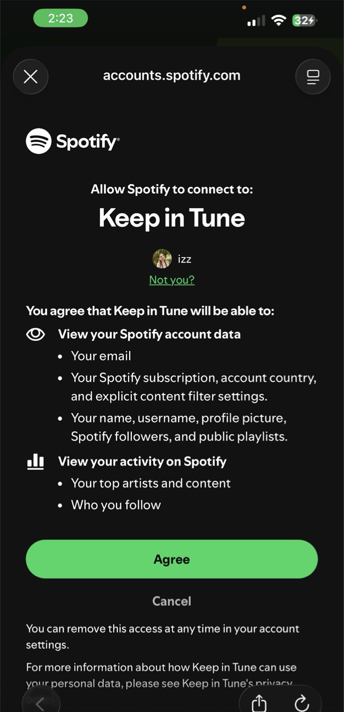
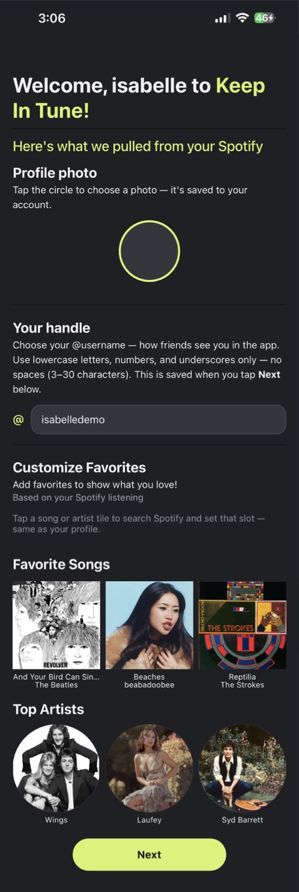
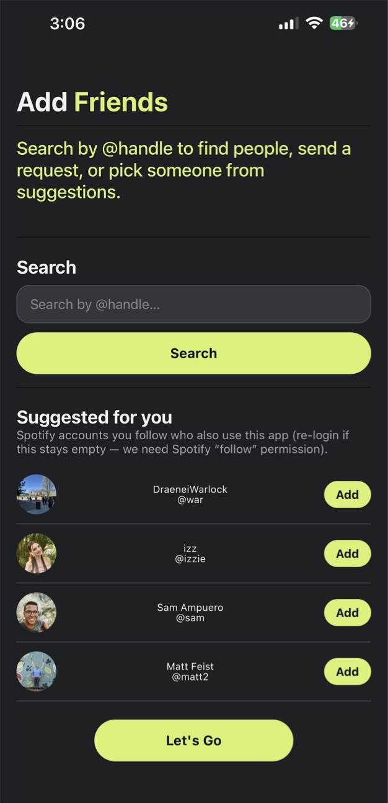
The feed is the core of the app. Until you post your song of the day, friends’ posts stay blurred. Once you share, the feed unlocks and you can like, comment, and play a 30-second preview.
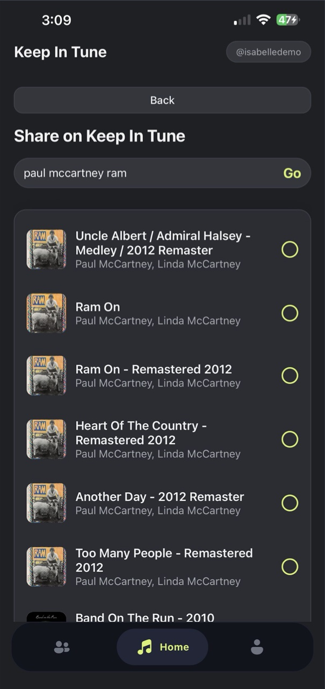
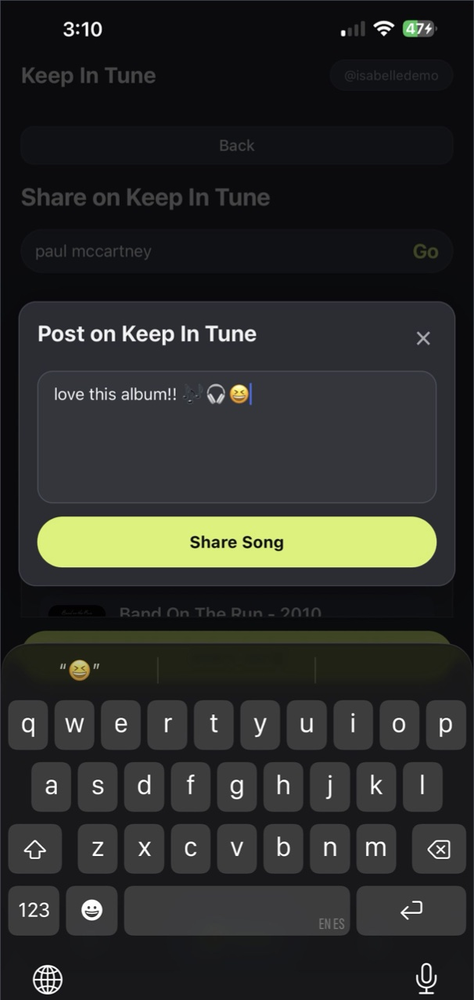
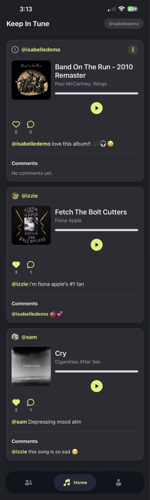
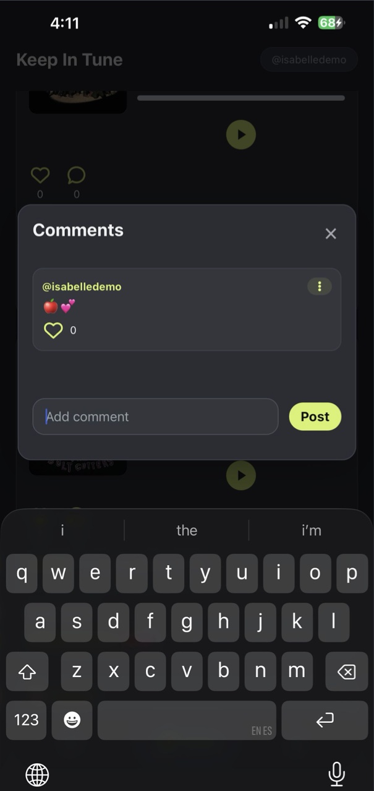
Search by handle, send and accept requests on one page, and see suggestions from Spotify friends and friends of friends. Who you connect with decides whose songs show up in your feed.
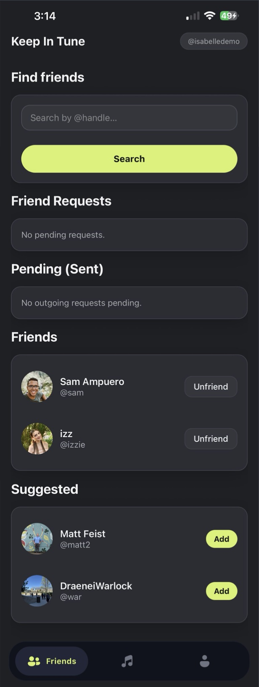
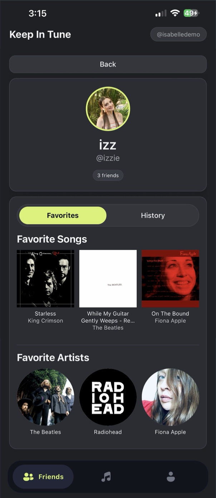
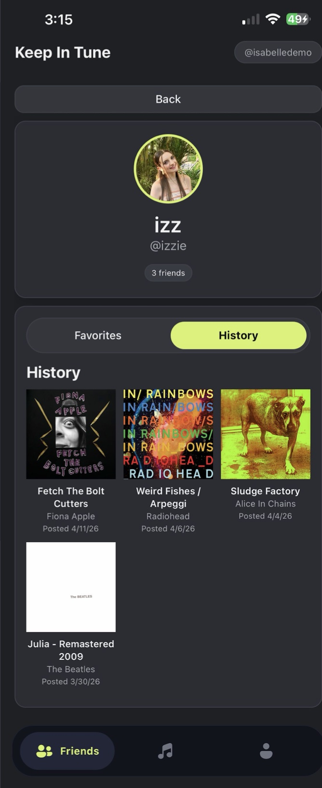
Your top three songs and artists live under Favorites and can be changed any time. History is a grid of everything you’ve posted, and each song opens to show the likes and comments it got.
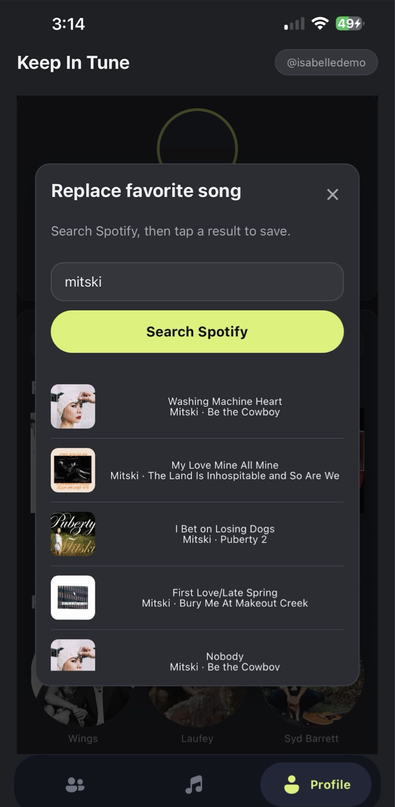
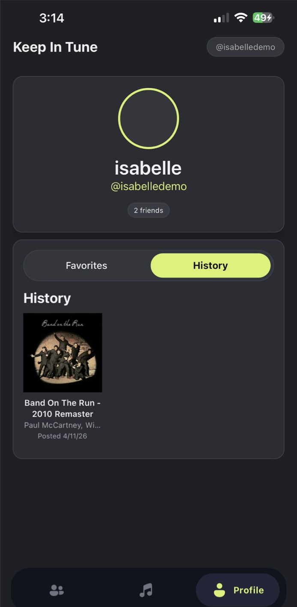
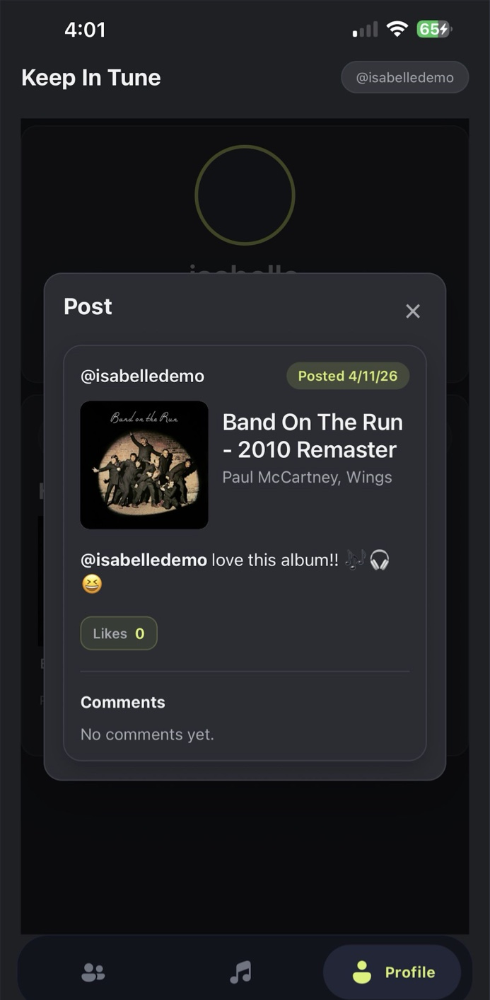
All three of us already knew React, TypeScript, and CSS, so the barrier to entry was low. It also lets one codebase cover both Android and Apple. We were very satisfied with it.
Our team knew them best. MongoDB’s interface is simple and free, Express let us host local servers on our own devices, Node.js connected the front end through APIs, and TypeScript stayed the common language across the app.
Spotify powers sign-in, listening history, friend suggestions, search, and previews. We chose it after polling peers: every poll came back saying Spotify was the most used, which fits our audience of people in their 20s.
We first planned to support Spotify, Apple, and YouTube Music for accessibility. Because of time we narrowed it to Spotify only.
An early plan let you collect each day’s songs into a playlist. We dropped it because of time, and because it lined up least with the vision.
Everything we cut is on the list to add in the future.
More case studies are on the way. Or take a look at the code side of my work.